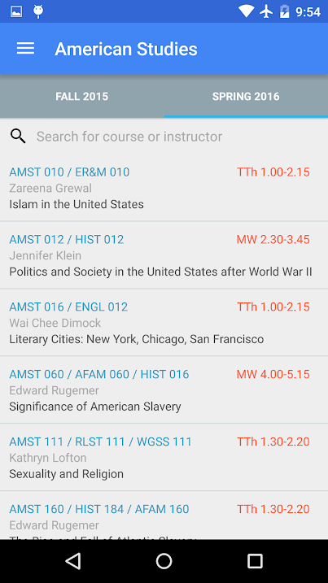
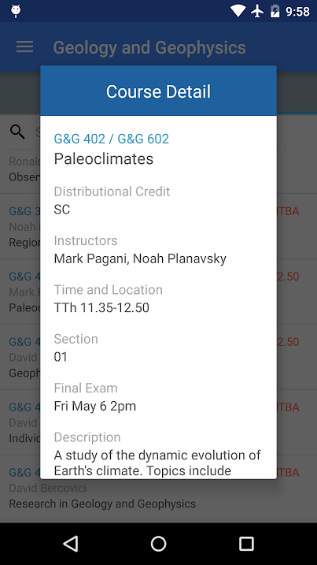
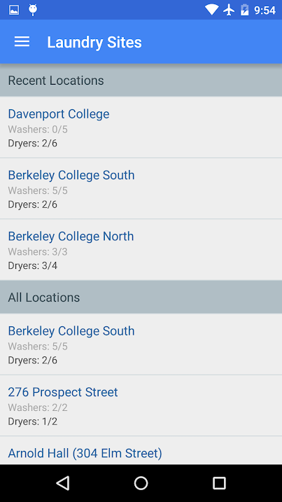
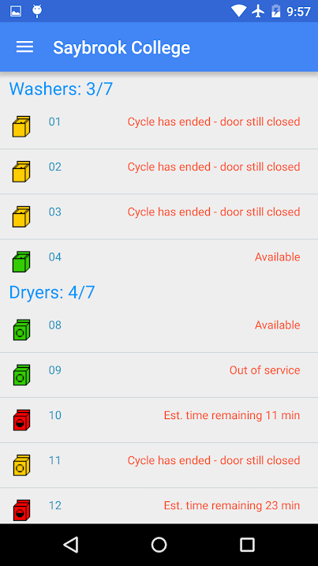
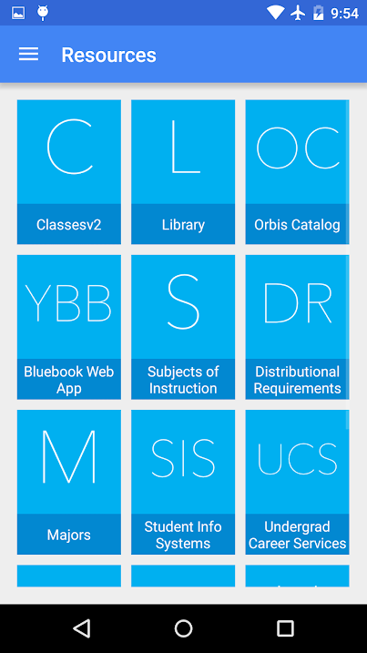
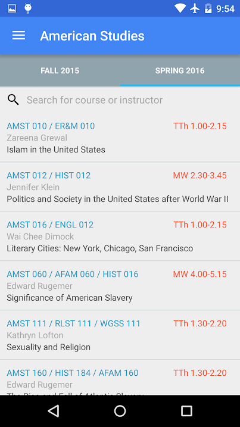
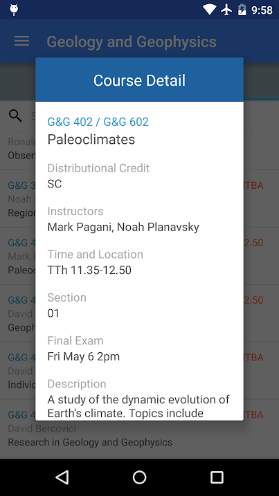
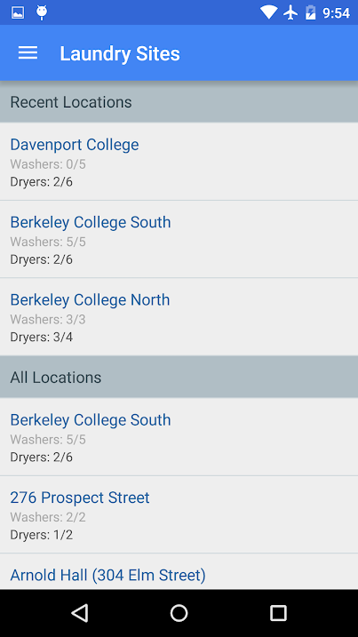
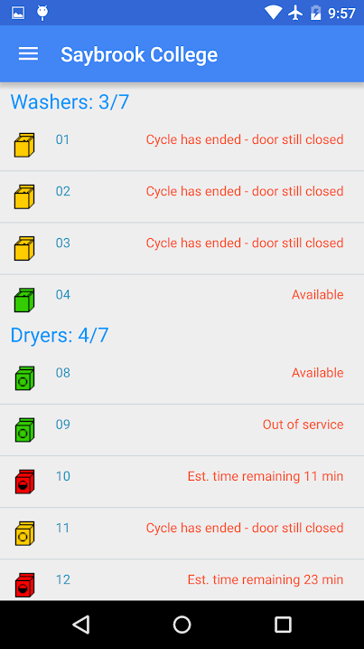
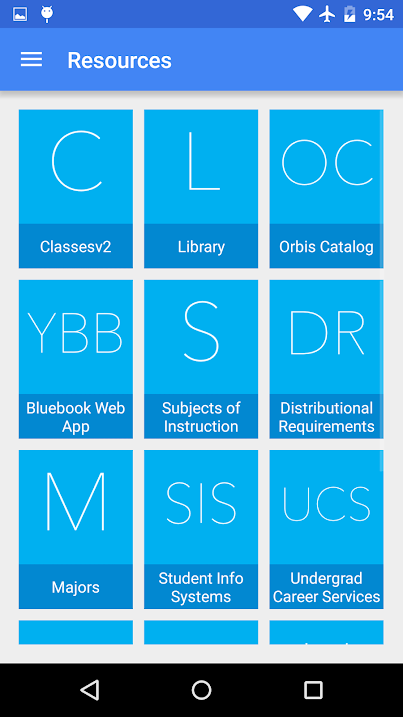

I realized that there wasn't a convenient way to access information that
I wanted to see each day - food menus, class lists, a map of buildings, and the academic calendar.
So I created an app for Yale students to access important information all around campus!
Here's the current feature list:
Dining - Current dining hall menus, updated daily
Weather - Access the current weather of New Haven as well as other stats such as Sunrise/Sunset times
Bluebook - Links to all of the current course offerings, online bluebook services, and list of majors
Laundry - Access to each laundry room on campus showing which machines are available and taken
Map - A list of all of the building abbreviations which are linked to addresses through Google Maps
Hours - Times, places, and addresses of important buildings around campus as well as restaurants
Links - A list of important links, the course offerings, online bluebook services, and list of majors
Calendar - The 2014-2015 Academic Year calendar with all of the important dates.
 








